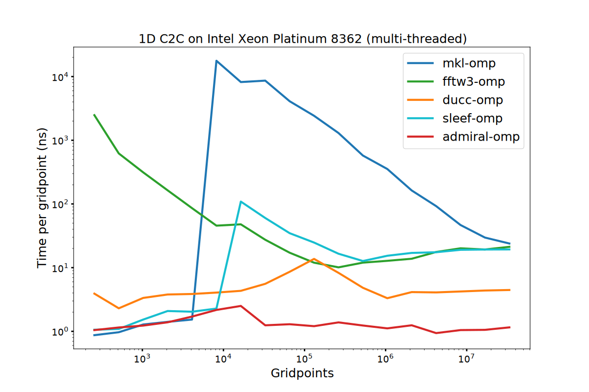
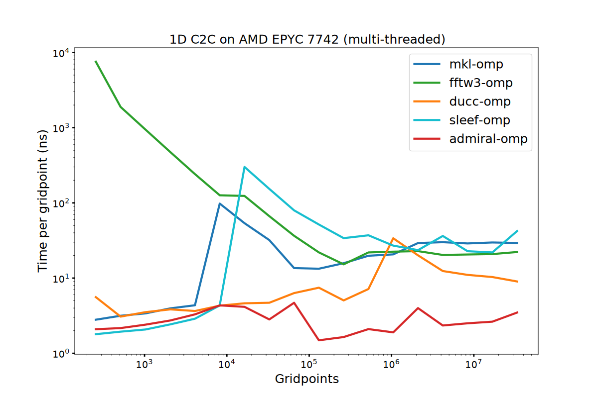
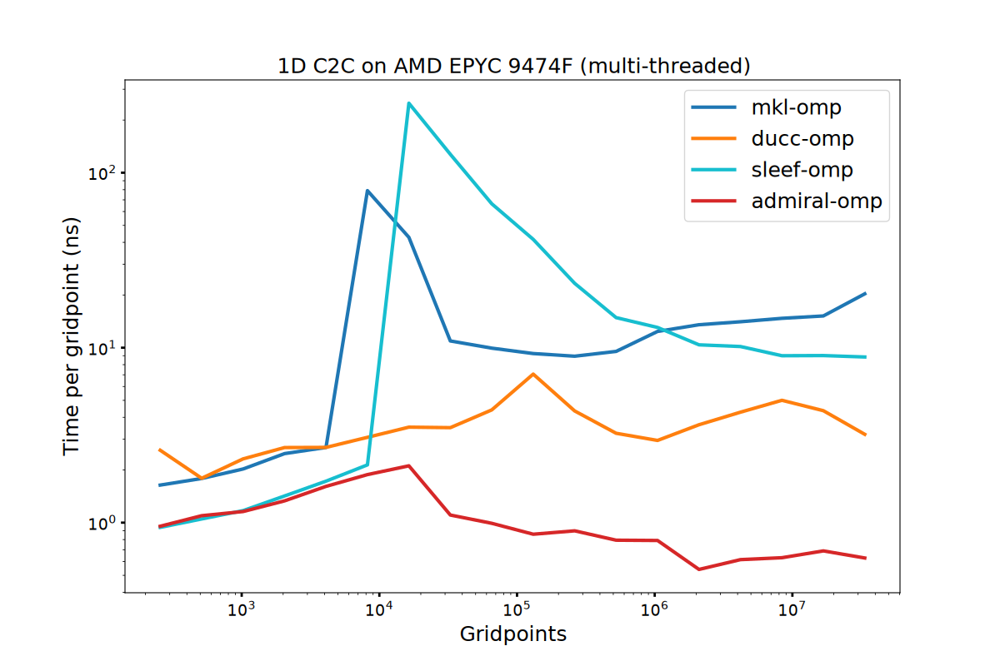
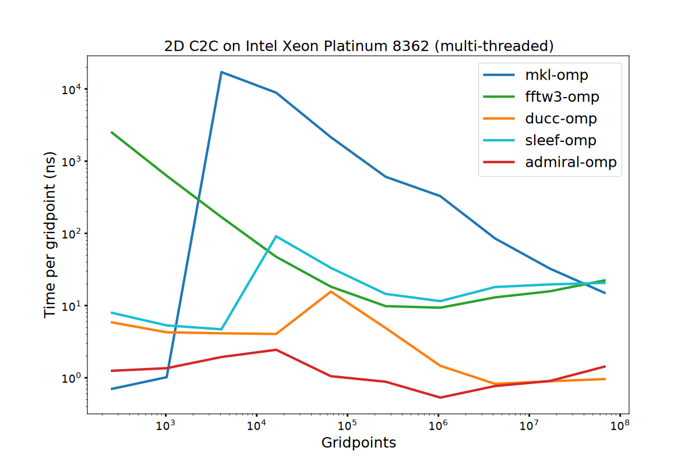
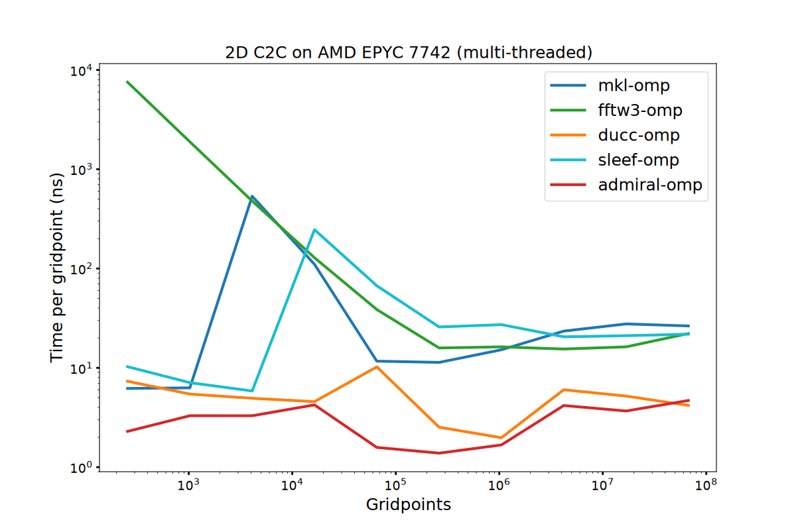
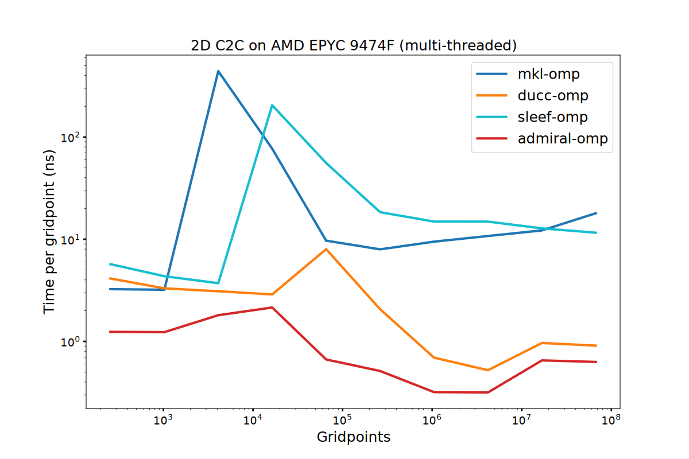
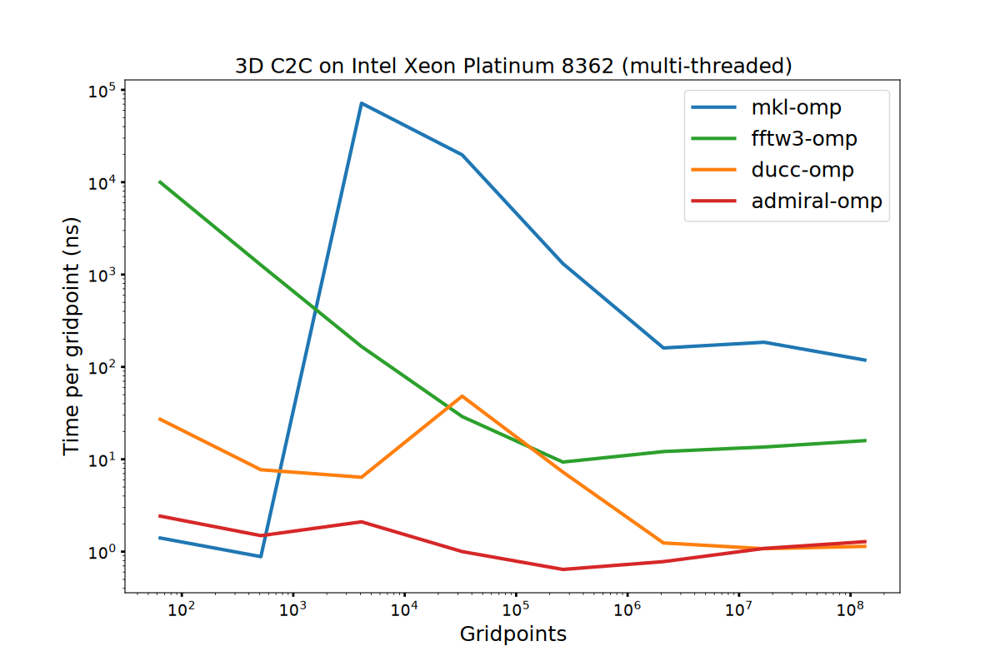
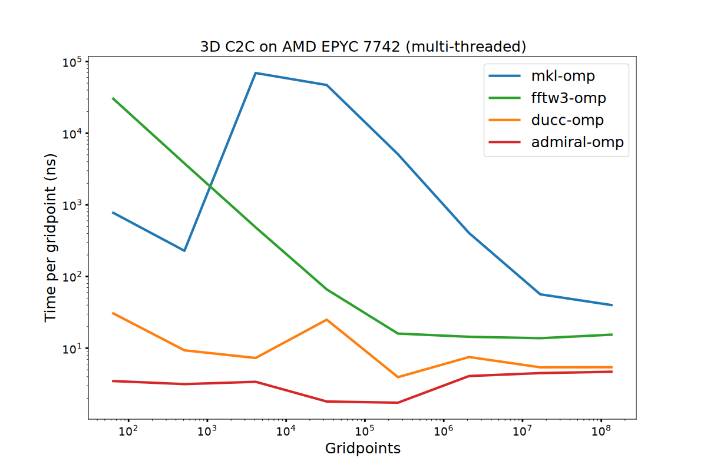
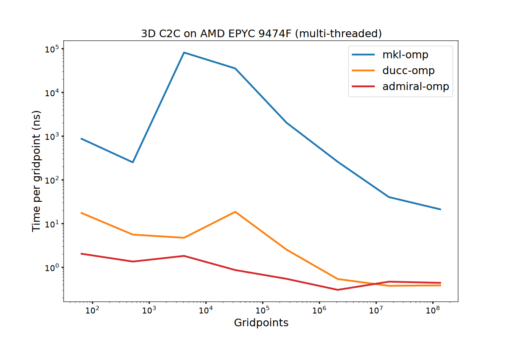

Intro
C++ is a great language for low-level optimization and is getting better!
Is it perfect? Constraining the compiler can backfire.
Thanks to the committee for the tools that make this possible, and to the compiler developers, whom the code in this talk probably undermines.
02 / 44
Timeline
How this talk happened
2024-06-21FINUFFT #459unroll and dispatch by hand on the CPU spreader
2025-09-16CppCon 2025Alexandrescu, "How to Tame Packs": the systematic version
2025-11-06poet is bornthe trick becomes a library
2026-09-14CppCon 2026this talk
03 / 44
Notice
Not a product placement. But…
diamondinoia.com/cppcon26
- poetcompile-time control and runtime dispatch, C++17
- xsimdportable SIMD batches
- FINUFFTwhere this started, issue #459
- these slidesthe benchmark code
04 / 44
Scope
This talk is not a template packs tutorial.
For template packs see Andrei Alexandrescu, CppCon 2025, How to Tame Packs, std::tuple, and the Wily std::integer_sequence youtu.be/X_w_pcPs2Fk.
Here: the gist, how to use them for low level optimization.
05 / 44
Agenda
The journey
01monstersthe six patternsmacros, pragmas, inline asm
02C++14/17fold expressions
integral_constant, integer_sequence, if constexpr03C++20templated lambdas
consteval04C++26template for
std::simd05exampleadmiralan FFT library, based on poet and xsimd
start06 / 44
Part one
The six monsters
Six patterns that buy performance and charge for it every day after.
07 / 44
The six monsters
What lives in real codebases
01
Hand unrolling
02
Macro magic
03
Pragmas
04
Kernel dispatch
05
Inline asm
06
Generated code
08 / 44
Baseline
One accumulator, one serial chain
sum_plain.cppg++ -O3 -march=native
float sum_plain(const float *a, int n) {
float s = 0;
for (int i = 0; i < n; i++) {
s += a[i];
}
return s;
}
$ ./bench9.6 GB/s1.0xone add every ~4 cycles
or
sum_accumulate.cppg++ -O3 -march=native
float sum_plain(const float *a, int n) {
return std::accumulate(a, a + n, 0.0f);
}
$ ./bench9.6 GB/s1.0xthe same serial chain
- Each add waits for the previous one. The loop is one dependency chain.
- The vector units are idle. Nothing here can issue in parallel.
- This is the whole baseline. Every ratio in this talk is against it.
09 / 44
Monster 01 · hand unrolled
Four accumulators, four chains
sum_hand.cppg++ -O3 -march=native
float sum_hand(const float *a, int n) {
float s0 = 0, s1 = 0, s2 = 0, s3 = 0;
int i = 0;
for (; i + 3 < n; i += 4) {
s0 += a[i];
s1 += a[i + 1];
s2 += a[i + 2];
s3 += a[i + 3];
}
for (; i < n; i++) {
s0 += a[i];
}
return (s0 + s1) + (s2 + s3);
}
$ ./bench38.0 GB/s4.0xfour chains
sum_reduce.cppg++ -O3 -march=native
float sum_reduce(const float *a, int n) {
return std::reduce(a, a + n, 0.0f);
}
$ ./bench33.8 GB/s3.5xlibstdc++ unrolls by four
- Four copies of one line. The body changes in four places or not at all.
- The unroll factor is baked into the source. Retuning means retyping.
- A wrong index in one copy still compiles. And still returns a number.
10 / 44
Monster 02 · macro magic
Unrolling through the preprocessor
sum_macro.cppg++ -O3 -march=native
#define ACC4(i, n, BODY) \
for (; i + 3 < n; i += 4) { \
BODY(0) BODY(1) BODY(2) BODY(3) \
}
float sum_macro(const float *a, int n) {
float s0 = 0, s1 = 0, s2 = 0, s3 = 0;
int i = 0;
#define BODY(k) s##k += a[i + k];
ACC4(i, n, BODY)
#undef BODY
for (; i < n; i++) {
s0 += a[i];
}
return (s0 + s1) + (s2 + s3);
}
$ ./bench38.0 GB/s4.0xsame asm as monster 01
- The body is written once and the unroll factor is a macro parameter.
- Text substitution. No types, no scope:
BODY(i++)compiles, and is wrong. - The debugger lands on the invocation line. All four bodies, one line.
- It is unreadable.
11 / 44
Monster 03 · pragmas
Ask the compiler nicely
sum_pragma.cppg++ -O3 -march=native
float sum_pragma_unroll(const float *a, int n) {
float s = 0;
#pragma GCC unroll 4
for (int i = 0; i < n; i++) {
s += a[i];
}
return s;
}
$ ./bench9.6 GB/s1.0xno speedup at all
The loop is unrolled. The reduction is not.
- One accumulator, one dependency chain. Unrolling the body does not break it.
- Floating-point addition is not associative, so the compiler may not reassociate.
- Nothing warns. The pragma was honoured. The code is still 1.0x.
12 / 44
Monster 03 · pragmas
Every compiler wants its own spelling
| pre-2014 | #pragma unroll exists in ICC, IBM XL and CUDA. Not in GCC, not in Clang. |
| 2014-09 · Clang 3.5 | ships #pragma unroll and #pragma nounroll, plus #pragma clang loop unroll[_count]. |
| 2018-05 · GCC 8 | adds #pragma GCC unroll n for C, C++, Fortran and Ada. |
| 2021-10 · Clang 13 | accepts #pragma GCC unroll and nounroll. Also gains #pragma omp unroll. |
| 2025 · GCC 15 | implements #pragma omp unroll. |
- Some forms are hints, not contracts.
- The failure mode is silent: slower code, no diagnostic.
- An unrecognized pragma is a warning, maybe the performance report mentions unrolling/vectorization
13 / 44
Monster 03 · pragmas
The pragma that says what we mean
sum_omp.cppg++ -O3 -march=native -fopenmp-simd
float sum_pragma_omp(const float *a, int n) {
float s = 0;
#pragma omp simd reduction(+:s)
for (int i = 0; i < n; i++) {
s += a[i];
}
return s;
}
$ ./bench74.8 GB/s7.8xsplit into lanes, reduce at the end
reduction(+:s) is permission, not a hint.
- GCC splits the reduction across SIMD lanes and reduces once at the end.
- Needs
-fopenmp-simd. Forget the flag and the pragma is ignored. - Still a pragma: outside the language, spelled differently per vendor.
14 / 44
Monster 04 · dispatch
The C++ solution.
sum_unrolled.cppg++ -O3 -march=native
template <int UNROLL>
float sum_unrolled(const float *a, int n) {
auto sums = std::array<float, UNROLL>{};
int i = 0;
for (; i + UNROLL <= n; i += UNROLL) {
for (int k = 0; k < UNROLL; ++k) {
sums[k] += a[i + k];
}
}
sums[0] = std::reduce(a + i, a + n, sums[0]);
return std::reduce(sums.begin(), sums.end(), 0.0f);
}
C++17, and the body is written once.
UNROLLis a template parameter, so the inner loop (hopefully) is fully unrolled.- The accumulators are an array, not four named variables.
- One question left: who picks
UNROLL?
15 / 44
Monster 04 · dispatch
… and the ladder is typed by hand
sum_dispatch.cppg++ -O3 -march=native
float sum_dispatch(const float *a, int n, int unroll) {
if (unroll == 2) {
return sum_unrolled<2>(a, n);
}
if (unroll == 4) {
return sum_unrolled<4>(a, n);
}
if (unroll == 8) {
return sum_unrolled<8>(a, n);
}
if (unroll == 16) {
return sum_unrolled<16>(a, n);
}
throw std::invalid_argument("Unsupported unroll factor");
}
$ ./bench138.8 GB/s14.5xUNROLL = 16, and portable
- One branch per supported factor, written and audited by hand.
- Two parameters and the ladder is O(N×M).
- Miss a case and it throws at run time, or silently hits the wrong kernel.
- The ladder drifts from the kernels it dispatches to.
16 / 44
Monster 05 · inline asm
Sixteen chains, zero abstraction
sum_asm.cppg++ -O3 -march=native
// all 16 ymm are accumulators, nothing spills: 128 floats per iteration
float sum_asm(const float *a, int n) {
if (n < 128) return sum_plain(a, n); // the loop below always runs once
float r;
long m = n & ~127L;
asm volatile(
"vxorps %%ymm0, %%ymm0, %%ymm0\n\t" // ... and ymm1 to ymm15
"xor %%rcx, %%rcx\n"
"1:\n\t"
"vaddps 0(%[a],%%rcx,4), %%ymm0, %%ymm0\n\t"
"vaddps 32(%[a],%%rcx,4), %%ymm1, %%ymm1\n\t" // ... to 480 and ymm15
"add $128, %%rcx\n\t"
"cmp %[m], %%rcx\n\t"
"jl 1b\n\t" // then reduce the 16 and sum lanes
"vmovss %%xmm0, %[r]\n\t"
: [r] "=m"(r)
: [a] "r"(a), [m] "r"(m)
: "rcx", "ymm0", /* ... */ "ymm15", "memory", "cc");
for (long i = m; i < n; i++) r += a[i]; // the scalar tail
return r;
}
$ ./bench248.2 GB/s25.9x16 chains on 2 FP ports, no spill
- Optimal the day it is written. Compilers improve; this does not.
- One ISA. AVX-512, NEON, SVE: start again.
- The register allocator is now a human, and the human is now on call.
- Debuggers and sanitizers see an opaque block.
17 / 44
Monster 06 · code generation
Write a program that writes the kernels
OCaml, or any other language, emits the C++ that the compiler then sees.
- Two languages, two toolchains, one more build step to maintain.
- The generated output gets no compile-time validation from the generator. The generator's type system does not reach the emitted code.
- Compile times explode.
- It does not generalize. One more kernel shape and the world is regenerated.
18 / 44
Honourable (?) mention
Compiler built-in vectors
sum_builtin.cppg++ -O3 -march=native
typedef float v8 __attribute__((vector_size(32), aligned(4)));
float sum_builtin(const float *a, int n) {
v8 s[16] = {};
int i = 0;
for (; i + 127 < n; i += 128) {
for (int k = 0; k < 16; k++) {
s[k] += *(v8 *)(a + i + 8 * k);
}
}
const v8 t = std::reduce(s, s + 16, v8{});
const auto *lanes = reinterpret_cast<const float *>(&t);
const float r = std::reduce(lanes, lanes + 8, 0.0f);
return std::reduce(a + i, a + n, r);
}
$ ./bench240.9 GB/s25.1xmatches the asm, no intrinsic in sight
Same 16 accumulators. The compiler allocates the registers.
- No intrinsic, no ISA name anywhere in the source.
- 16 accumulators fit the register file.
- Still a vendor extension, not the standard.
19 / 44
Scoreboard
What the monsters bought
| implementation | GB/s | vs plain | |
|---|---|---|---|
| plain loop | 9.6 | 1.0x | |
| std::reduce | 33.8 | 3.5x | |
| 01 hand unrolled ×4 | 38.0 | 4.0x | |
| 02 macro unrolled ×4 | 38.0 | 4.0x | |
| 03a #pragma GCC unroll 4 | 9.6 | 1.0x | |
| 03b #pragma omp simd reduction | 74.8 | 7.8x | |
| 04 dispatch<16> | 138.8 | 14.5x | |
| 05 inline asm, 16 ymm | 248.2 | 25.9x | |
| + built-in vectors | 240.9 | 25.1x |
Core Ultra 7 155H (Meteor Lake), AVX2 · gcc 17.0.0 20260914 · -O3 -march=native -fopenmp-simd · n = 8192 floats, L1-resident, 64B-aligned · min of 20000 × best of 3, pinned to one core · code/code.cpp
20 / 44
The bill
26x faster. At what cost?
Maintainability
The unroll factor lives in four places at once
Portability
One ISA, one compiler, one spelling of the pragma
Debuggability
The debugger stops at the macro invocation, or at an opaque asm block
Readability
The intent is buried under the mechanism
Drift
The ladder and the kernels stop agreeing, silently
21 / 44
Part two
C++ already has the tools.
if constexpr, fold expressions, template packs and concepts express the intent in code the compiler can still optimize.
Since C++17 I reach for the monsters less and less. As compilers improve, the performance is free. New architectures are free. C++26 reflection makes it shorter still.
22 / 44
C++17
The helper writes the body
sum_pack17.cppg++ -std=c++17 -O3 -march=native
template <class F, int... K>
void static_for(F f, std::integer_sequence<int, K...>) {
(f(std::integral_constant<int, K>{}), ...);
}
template <int UNROLL>
float sum_pack17(const float *a, int n) {
auto s = std::array<float, UNROLL>{};
int i = 0;
for (; i + UNROLL - 1 < n; i += UNROLL) {
static_for([&](auto k) { s[k] += a[i + k]; },
std::make_integer_sequence<int, UNROLL>{});
}
s[0] = std::reduce(a + i, a + n, s[0]);
return std::reduce(s.begin(), s.end(), 0.0f);
}
$ ./bench75.2 GB/s7.8xUNROLL = 8
Monster 01, with UNROLL accumulators instead of four.
static_forpasses the index as anintegral_constant, sos[k]is a compile-time index.- The body is typed once and the compiler writes the copies.
- A wrong index is now a compile error, not a silent wrong answer.
- Four lines of library, and it ships today on the compiler you already have.
- This function is the whole idea behind
poet::static_for.
23 / 44
C++20
The pack writes the body
sum_pack.cppg++ -std=c++20 -O3 -march=native
template <int UNROLL>
auto sum_pack(std::span<const float> a) -> float {
auto sums = std::array<float, UNROLL>{};
const int n = int(a.size());
int i = 0;
for (; i + UNROLL - 1 < n; i += UNROLL) {
[&]<int... K>(std::integer_sequence<int, K...>) {
((sums[K] += a[i + K]), ...);
}(std::make_integer_sequence<int, UNROLL>{});
}
sums[0] = std::reduce(a.begin() + i, a.end(), sums[0]);
return std::reduce(sums.begin(), sums.end(), 0.0f);
}
$ ./bench75.2 GB/s7.8xUNROLL = 8
The same kernel, with the helper deleted.
- The templated lambda takes the pack, so
static_foris no longer needed. - The fold expression emits one
sums[K] += a[i + K]per index. - One body still, and one compile error still for a wrong index.
- UNROLL = 8 here. The dispatch slide lets the machine pick 16.
24 / 44
C++26
The pack becomes a statement
sum_expand.cppg++ -std=c++26 -O3 -march=native
template <int UNROLL>
float sum_expand(std::span<const float> a) {
const int n = int(a.size());
auto s = std::array<float, UNROLL>{};
int i = 0;
for (; i + UNROLL - 1 < n; i += UNROLL) {
template for (constexpr int k : std::views::iota(0, UNROLL)) {
s[k] += a[i + k];
}
}
s[0] = std::reduce(a.begin() + i, a.end(), s[0]);
return std::reduce(s.begin(), s.end(), 0.0f);
}
$ ./bench75.2 GB/s7.8xUNROLL = 8
template for repeats the body once per element.
- Inside each copy
kis a constant expression. - No lambda, no
integer_sequence, no fold. s[k] += a[i + k]
25 / 44
Dispatch
The factor arrives at run time
dispatch.cppg++ -std=c++17 -O3 -march=native
const auto unroll = choose_unroll();
Assume choose_unroll() selects an unroll factor for the machine.
if constexprneeds a constant. This is not one.unrollis anint; the kernels are templates.- Every monster so far solved this with a ladder.
26 / 44
C++17 · dispatch
One fold, no ladder
sum_dispatch_fold.cppg++ -std=c++17 -O3 -march=native
template <int... UNROLL, class F>
bool dispatch(int unroll, F f, std::integer_sequence<int, UNROLL...>) {
return ((unroll == UNROLL ? (f(std::integral_constant<int, UNROLL>{}), true)
: false) || ...);
}
float sum_pack_dispatch(const float *a, int n, int unroll) { // unroll known at run time only
float r = 0;
if (!dispatch(unroll, [&](auto k) { r = sum_pack17<k>(a, n); },
std::integer_sequence<int, 2, 4, 8, 16, 32>{})) {
r = sum_plain(a, n); // no kernel for this unroll
}
return r;
}
$ ./bench135.4 GB/s14.1xthe monster 04 kernel, no ladder
unroll is known at run time only.
if constexprcannot branch on a runtime value. The fold can.- The list of supported factors is the code. It cannot drift.
- Short-circuit
||stops at the first match. - No match returns
false, so the fallback is explicit, not a throw.
27 / 44
C++26
The ladder is the list
sum_expand_best.cppg++ -std=c++26 -O3 -march=native
float sum_expand_best(std::span<const float> a) {
const int unroll = choose_unroll();
template for (constexpr int UNROLL : {2, 4, 8, 16, 32}) {
if (unroll == UNROLL) {
return sum_expand<UNROLL>(a);
}
}
return sum_plain(a.data(), int(a.size())); // no kernel for this factor
}
$ ./bench130.0 GB/s13.6xthe ladder, deleted
Assume choose_unroll() picks a factor for the machine.
- The braced list is the set of kernels that exist. Add 32 and the dispatch grows with it.
- Every branch is generated from the same source line.
- The fallback is one call, not a throw.
28 / 44
C++26 · std::simd
Vectors in the language
sum_std_simd.cppg++ -std=c++26 -O3 -march=native
template <int UNROLL>
float sum_std_simd(std::span<const float> a) {
namespace simd = std::simd;
using v = simd::vec<float>;
static constexpr int width = int(v::size());
static constexpr int step = UNROLL * width;
const int n = int(a.size());
const int vector_end = n - n % step;
std::array<v, UNROLL> s{};
for (int i = 0; i < vector_end; i += step) {
template for (constexpr int k : std::views::iota(0, UNROLL)) {
s[k] += simd::unchecked_load<v>(a.data() + i + k * width, width);
}
}
const v total = std::reduce(s.begin(), s.end(), v{});
return std::reduce(a.data() + vector_end, a.data() + n,
simd::reduce(total, std::plus<>{}));
}
$ ./bench235.7 GB/s24.6xwithin 6% of the hand-written asm
Five standard pieces, no intrinsics.
std::simd::vec<float>picks the native vector width.choose_unroll()picks the number of independent accumulators.template forwrites the load list.std::reducecombines the vectors, then the scalar tail, sonneeds no precondition.std::simd::reduceturns the last vector into one float.
29 / 44
C++26 · std::simd
Same dispatch, SIMD kernels
sum_std_simd_best.cppg++ -std=c++26 -O3 -march=native
float sum_std_simd_best(std::span<const float> a) {
const int unroll = choose_unroll();
template for (constexpr int UNROLL : {2, 4, 8, 16, 32}) {
if (unroll == UNROLL) {
return sum_std_simd<UNROLL>(a);
}
}
return sum_plain(a.data(), int(a.size()));
}
$ ./bench235.7 GB/s24.6xwithin 6% of the hand-written asm
This is the whole selection logic.
- The kernel is generic in
UNROLL. The dispatch is generic in the list. - Nothing here names an ISA, so a wider machine needs no new code. The hand-written asm would have to be rewritten for it.
30 / 44
Scoreboard
Standard C++, no monsters
| implementation | GB/s | vs plain | |
|---|---|---|---|
| plain loop | 9.6 | 1.0x | |
| 05 inline asm, 16 ymm | 248.2 | 25.9x | |
| C++17 static_for, UNROLL 8 | 75.2 | 7.8x | |
| C++20 pack, UNROLL 8 | 75.2 | 7.8x | |
| C++26 template for, UNROLL 8 | 75.2 | 7.8x | |
| fold dispatch | 135.4 | 14.1x | |
| template for dispatch | 130.0 | 13.6x | |
| std::simd + dispatch | 235.7 | 24.6x |
Core Ultra 7 155H · Meteor Lake, AVX2n = 8192 floats, L1-resident · min of 20000 × best of 3
The platform probe gives a register budget. The dispatch keeps the machine policy out of the kernel body. 135.4 GB/s at the selected UNROLL = 16.
31 / 44
poet · C++17
The manual ladder becomes one call
poet_api.cppg++ -std=c++17 -O3 -march=native
poet::static_for<Begin, End, Step>([](auto I) { f(I); });
poet::dynamic_for<Unroll>(begin, end, step, [](auto i) { f(i); });
poet::dynamic_for<Unroll, Step>(begin, end, [](auto i) { f(i); });
poet::dynamic_for<Unroll, Step>(begin, end,
[](auto lane, auto i) { sums[lane] += f(i); });
poet::dispatch(F{}, poet::dispatch_param<Values>{value}, args...);
Three functions, five forms. That is the whole API.
static_for<Begin, End, Step>passes a compile-time index.dynamic_fortakes the same range at run time and unrolls it byUnroll.Stepfolds the stride when it is a template parameter, and stays runtime as an argument.- The lane form selects an independent sum.
dispatchselects a template argument at run time.
32 / 44
poet · C++17
Kernel and dispatch, no ladder
sum_poet.cppg++ -std=c++17 -O3 -march=native
template <int UNROLL>
auto sum_poet(const float *a, int n) -> float {
auto s = std::array<float, UNROLL>{};
poet::dynamic_for<UNROLL>(0, n,
[&](auto lane, auto i) { s[lane] += a[i]; });
return std::reduce(s.begin(), s.end(), 0.0f);
}
using unrolls = std::integer_sequence<int, 2, 4, 8, 16, 32>;
auto sum_poet_dispatch(const float *a, int n, int unroll) -> float {
return poet::dispatch(poet::throw_on_no_match,
[=](auto tag) { return sum_poet<tag>(a, n); },
poet::dispatch_param<unrolls>{unroll});
}
$ ./bench135.4 GB/s14.1xmonster 04, in C++17
The remainder loop is inside dynamic_for.
unrollsis the list of kernels that exist. It appears once.poet::throw_on_no_matchis an object, not a type: no braces.- Nothing here is C++20.
33 / 44
poet + xsimd · C++17
std::simd, nine years early
sum_xsimd.cppg++ -std=c++17 -O3 -march=native
template <int UNROLL>
auto sum_xsimd(const float *a, int n) -> float {
using v = xsimd::batch<float, xsimd::best_arch>;
constexpr std::size_t width = v::size;
auto s = std::array<v, UNROLL>{};
const auto block = std::size_t{UNROLL} * width; // power of two
const auto vector_end = std::size_t(n) & ~(block - 1);
poet::dynamic_for<UNROLL, width>(std::size_t{0}, vector_end,
[&](auto lane, std::size_t i) {
s[lane] += v::load_unaligned(a + i);
});
const v total = std::reduce(s.begin(), s.end(), v(0.0f));
return std::reduce(a + vector_end, a + n, xsimd::reduce_add(total));
}
$ ./bench230.8 GB/s24.1xwithin 3% of C++26 std::simd
poet supplies the control flow, xsimd the vector type.
xsimd::best_archresolves the widest ISA the build targets.poet::dynamic_forsteps byUNROLL × widthelements.- Nothing in the kernel needs a standard past C++17.
34 / 44
Machine policy
How many accumulators fit?
choose_unroll.cppg++ -std=c++17 -O3 -march=native
auto choose_unroll() -> int {
const auto registers = int(poet::vector_register_count()); // from -march
return std::max(registers, 4);
}
poet::vector_register_count() reads -march at compile time.
constevalin C++20,constexprin C++17: the same call compiles in both.- The compiler folds
choose_unroll(), and the dispatch with it. - This is the only place the machine is mentioned.
35 / 44
poet + xsimd · C++17
Select the kernel, keep the standard
sum_xsimd_best.cppg++ -std=c++17 -O3 -march=native
auto sum_xsimd_best(const float *a, int n) -> float {
return poet::dispatch(poet::throw_on_no_match,
[=](auto tag) { return sum_xsimd<tag>(a, n); },
poet::dispatch_param<unrolls>{choose_unroll()});
}
$ ./bench230.8 GB/s24.1xthe machine picks UNROLL
One call selects the unroll factor.
poet::dispatch_param<unrolls>lists the values the ladder covers.choose_unroll()is a run-time value.dispatchmatches it against that list.- The kernel underneath never changes.
36 / 44
Scoreboard
Two standards apart, same numbers
| implementation | GB/s | vs plain | |
|---|---|---|---|
| plain loop | 9.6 | 1.0x | |
| 05 inline asm, 16 ymm | 248.2 | 25.9x | |
| C++17 poet + xsimd | 230.8 | 24.1x | |
| C++26 std::simd + template for | 235.7 | 24.6x |
Core Ultra 7 155H · Meteor Lake, AVX2n = 8192 floats, L1-resident · min of 20000 × best of 3
37 / 44
Results
Every implementation, different machines
| implementation | Core Ultra 7 155H | Xeon w5-3435X | ||||
|---|---|---|---|---|---|---|
| plain loop | 9.6 | 1.0x | 9.0 | 1.0x | ||
| std::reduce | 33.8 | 3.5x | 31.6 | 3.5x | ||
| 01 hand unrolled ×4 | 38.0 | 4.0x | 35.7 | 4.0x | ||
| 02 macro unrolled ×4 | 38.0 | 4.0x | 35.7 | 4.0x | ||
| 03a #pragma GCC unroll 4 | 9.6 | 1.0x | 9.0 | 1.0x | ||
| 03b #pragma omp simd reduction | 74.8 | 7.8x | 70.0 | 7.8x | ||
| 04 dispatch<16> | 138.8 | 14.5x | 133.7 | 14.9x | ||
| 05 inline asm, 16 ymm | 248.2 | 25.9x | 252.1 | 28.1x | ||
| + built-in vectors | 240.9 | 25.1x | 246.4 | 27.4x | ||
| C++17 static_for, auto unroll | 135.4 | 14.1x | 210.1 | 23.4x | ||
| C++17 poet + xsimd | 230.8 | 24.1x | 372.4 | 41.4x | ||
| C++26 std::simd + dispatch | 235.7 | 24.6x | 352.3 | 39.2x | ||
laptop · Meteor Lake, AVX2workstation · Sapphire Rapids, AVX-512same scale on both, 0 to 400 GB/sn = 8192 floats, L1-resident · min of 20000 × best of 3
38 / 44
Conclusion
Where the journey ends
The monsters are replaceable
Macros, pragmas and inline asm all have a standard C++ answer
No need to wait for C++26
With abstraction, C++17 reaches the same throughput
Performance without the bill
One kernel body, one list of factors, no ISA in the source
The compilers keep improving
New architectures come for free. The asm block does not
39 / 44
Backup · how far we can take it
admiral: my FFT library
- It was not supposed to be a library. It was supposed to be a playground for testing optimizations.
- Why FFT? Because there are fast implementations.
- It started as a collection of kernels (asm, C, C++) that I used to learn optimizations and HPC over the last 10+ years.
40 / 44
Backup · AI
I asked an LLM for exactly this
prompt.txt
\goal convert this codebase into a fully fledged FFT library:
1. Write an API to use the FFT (discussed over a while).
2. Use the current code as a baseline and do not regress performance.
3. Write C++17 code with clear algorithms (Bluestein, Good-Thomas), no
inline asm, no manual unrolling, no size-specific kernels, size as a
template parameter, and a cost model that decomposes the FFT into the
right kernels.
4. Replace all the inline asm,c intrinsics with c++17 once superseded delete
the old code
5. Avoid macros, use if constexpr and stdlib, fold expressions and so
on,POET and XSIMD (learn the API) for unrolling, simd, and so on.
6. Test against the Naive N^2 algorithm already presend (use the relative L2
norm). Reporpose the existing tests.
7. Repurpose the exsitsing benchmarks to test the new code.
41 / 44
Backup · result
One kernel, every radix
admiral/detail/butterfly.hppg++ -std=c++17 -O3 -march=native
#pragma once
// Cooley-Tukey decimation in frequency: Gentleman and Sande, AFIPS Fall Joint Comp. Conf. 1966.
// Odd radices use Singleton's sum/difference DFT, IEEE Trans. Audio Electroacoust. 17 (1969) 93.
#include <cstddef>
#include <type_traits>
#include <utility>
#include <poet/poet.hpp>
#include "cxx_compat.hpp"
#include "ct_math.hpp"
#include "macros.hpp"
namespace admiral {
namespace detail {
template<typename T, std::size_t IP, typename V, typename Emit>
ADM_ALWAYS_INLINE void radix_sym_dft(const V (&xr)[IP],
const V (&xi)[IP],
Emit&& emit) {
static_assert(IP % 2 == 1 && IP >= 3, "symmetric DFT is for odd radix >= 3");
constexpr std::size_t H = (IP - 1) / 2;
constexpr std::size_t HA = H + 1;
V ar[HA], ai[HA], dr[HA], di[HA];
poet::static_for<1, H + 1>([&](const auto m) {
constexpr std::size_t mc = IP - m;
ar[m] = xr[m] + xr[mc];
ai[m] = xi[m] + xi[mc];
dr[m] = xr[m] - xr[mc];
di[m] = xi[m] - xi[mc];
});
{
V sr = xr[0], si = xi[0];
poet::static_for<1, H + 1>([&](const auto m) {
sr = sr + ar[m];
si = si + ai[m];
});
emit(std::integral_constant<std::size_t, 0>{}, sr, si);
}
poet::static_for<1, H + 1>([&](const auto k) {
V PR = xr[0], PI = xi[0], QR = V(T(0)), QI = V(T(0));
poet::static_for<1, H + 1>([&](const auto m) {
constexpr auto w =
ct_sincos_turns<ct_real_t<T>>(
false, (m * std::decay_t<decltype(k)>::value) % IP, IP);
PR = PR + V(static_cast<T>(w.c)) * ar[m];
PI = PI + V(static_cast<T>(w.c)) * ai[m];
QR = QR + V(static_cast<T>(w.s)) * di[m];
QI = QI + V(static_cast<T>(w.s)) * dr[m];
});
emit(std::integral_constant<std::size_t, k>{}, PR + QR, PI - QI);
emit(std::integral_constant<std::size_t, IP - k>{}, PR - QR, PI + QI);
});
}
template<std::size_t N1, std::size_t N2, std::size_t K1, std::size_t K2>
inline constexpr std::size_t crt_index = [] {
for (std::size_t k = 0; k < N1 * N2; ++k)
if (k % N1 == K1 && k % N2 == K2) return k;
return N1 * N2;
}();
template<typename T, std::size_t IP, typename V, typename Emit>
ADM_ALWAYS_INLINE void pow2_dif_butterfly(const V (&xr)[IP], const V (&xi)[IP], Emit&& emit);
template<typename T, std::size_t N, typename V, typename Emit>
ADM_ALWAYS_INLINE void sub_dft(const V (&xr)[N], const V (&xi)[N], Emit&& emit) {
if constexpr (detail::has_single_bit(N))
pow2_dif_butterfly<T, N, V>(xr, xi, std::forward<Emit>(emit));
else
radix_sym_dft<T, N>(xr, xi, std::forward<Emit>(emit));
}
template<typename T, std::size_t N1, std::size_t N2, typename V, typename Emit>
ADM_ALWAYS_INLINE void pfa_dif_butterfly(const V (&tr)[N1 * N2],
const V (&ti)[N1 * N2],
Emit&& emit) {
constexpr std::size_t IP = N1 * N2;
static_assert(std::gcd(N1, N2) == 1, "PFA requires coprime factors");
V ar[N1][N2], ai[N1][N2];
poet::static_for<0, N2>([&](const auto n2) {
V br[N1], bi[N1];
poet::static_for<0, N1>([&](const auto n1) {
constexpr std::size_t src = (n1 * N2 + std::decay_t<decltype(n2)>::value * N1) % IP;
br[n1] = tr[src];
bi[n1] = ti[src];
});
sub_dft<T, N1>(br, bi, [&](auto K1, V yr, V yi) {
ar[K1][n2] = yr;
ai[K1][n2] = yi;
});
});
poet::static_for<0, N1>([&](const auto k1) {
sub_dft<T, N2>(ar[k1], ai[k1], [&](const auto k2, V yr, V yi) {
constexpr auto out = crt_index<N1, N2, k1, k2>;
static_assert(out < IP, "CRT index must exist for coprime N1,N2");
emit(std::integral_constant<std::size_t, out>{}, yr, yi);
});
});
}
[[nodiscard]] constexpr std::size_t sym_dft_ops(std::size_t n) noexcept {
const std::size_t h = (n - 1) / 2;
return 4 * h * h + 10 * h;
}
[[nodiscard]] constexpr std::size_t ct_dft_ops(std::size_t n1, std::size_t n2) noexcept {
return n2 * sym_dft_ops(n1) + n1 * sym_dft_ops(n2) + 6 * (n1 - 1) * (n2 - 1);
}
[[nodiscard]] constexpr std::pair<std::size_t, std::size_t> odd_ct_split(std::size_t n) noexcept {
if (n % 2 == 0 || coprime_split(n).first != 0) return {0, 0};
for (std::size_t p = 3; p * p <= n; p += 2)
if (n % p == 0 && ct_dft_ops(p, n / p) < sym_dft_ops(n)) return {p, n / p};
return {0, 0};
}
template<typename T, std::size_t IP, std::size_t N, typename V>
[[nodiscard]] ADM_ALWAYS_INLINE std::pair<V, V> apply_stage_twiddle(V fr, V fi) {
constexpr auto w = ct_sincos_turns<ct_real_t<T>>(true, N, IP);
if constexpr (w.s == 0 && w.c == 1) {
return {fr, fi};
} else if constexpr (w.s == 0 && w.c == -1) {
return {-fr, -fi};
} else if constexpr (w.c == 0 && w.s == -1) {
return {fi, -fr};
} else if constexpr (w.c == 0 && w.s == 1) {
return {-fi, fr};
} else if constexpr (w.c == w.s) {
const V c(static_cast<T>(w.c));
return {c * (fr - fi), c * (fi + fr)};
} else if constexpr (w.c == -w.s) {
const V c(static_cast<T>(w.c));
return {c * (fr + fi), c * (fi - fr)};
} else {
const V c(static_cast<T>(w.c)), s(static_cast<T>(w.s));
return {c * fr - s * fi, c * fi + s * fr};
}
}
template<typename T, std::size_t IP, typename V, typename Emit>
ADM_ALWAYS_INLINE void pow2_dif_butterfly(const V (&xr)[IP],
const V (&xi)[IP],
Emit&& emit) {
static_assert(IP >= 2 && detail::has_single_bit(IP), "pow2_dif_butterfly: IP must be a power of two >= 2");
if constexpr (IP == 2) {
emit(std::integral_constant<std::size_t, 0>{}, xr[0] + xr[1], xi[0] + xi[1]);
emit(std::integral_constant<std::size_t, 1>{}, xr[0] - xr[1], xi[0] - xi[1]);
} else {
constexpr std::size_t H = IP / 2;
{
V er[H], ei[H];
poet::static_for<0, H>([&](const auto n) {
er[n] = xr[n] + xr[n + H];
ei[n] = xi[n] + xi[n + H];
});
pow2_dif_butterfly<T, H, V>(er, ei, [&](auto Kc, V yr, V yi) {
emit(std::integral_constant<std::size_t, 2 * Kc>{}, yr, yi);
});
}
{
V fr[H], fi[H];
poet::static_for<0, H>([&](const auto n) {
auto [tr, ti] = apply_stage_twiddle<T, IP, n, V>(
xr[n] - xr[n + H], xi[n] - xi[n + H]);
fr[n] = tr;
fi[n] = ti;
});
pow2_dif_butterfly<T, H, V>(fr, fi, [&](auto Kc, V yr, V yi) {
emit(std::integral_constant<std::size_t, 2 * Kc + 1>{}, yr, yi);
});
}
}
}
template<typename T, std::size_t N1, std::size_t N2, typename V, typename Emit>
ADM_ALWAYS_INLINE void ct_dif_butterfly(const V (&tr)[N1 * N2],
const V (&ti)[N1 * N2],
Emit&& emit) {
constexpr std::size_t IP = N1 * N2;
static_assert(N1 % 2 == 1 && N2 % 2 == 1 && N1 >= 3 && N2 >= 3,
"ct_dif_butterfly: both factors must be odd radices >= 3");
V ar[N1][N2], ai[N1][N2];
poet::static_for<0, N2>([&](const auto n2) {
V br[N1], bi[N1];
poet::static_for<0, N1>([&](const auto n1) {
br[n1] = tr[n1 * N2 + n2];
bi[n1] = ti[n1 * N2 + n2];
});
radix_sym_dft<T, N1>(br, bi, [&](const auto r, V yr, V yi) {
const auto [fr, fi] = apply_stage_twiddle<T, IP, r * n2, V>(yr, yi);
ar[r][n2] = fr;
ai[r][n2] = fi;
});
});
poet::static_for<0, N1>([&](const auto r) {
radix_sym_dft<T, N2>(ar[r], ai[r], [&](const auto k2, V yr, V yi) {
emit(std::integral_constant<std::size_t, k2 * N1 + r>{}, yr, yi);
});
});
}
template<std::size_t IP>
inline constexpr bool dif_butterfly_wants_reload =
butterfly_wants_reload(IP, poet::vector_register_count());
template<typename T, std::size_t IP, typename V, typename Emit>
ADM_ALWAYS_INLINE void dif_butterfly(const V (&tr)[IP],
const V (&ti)[IP],
Emit&& emit) {
constexpr auto ct = odd_ct_split(IP);
constexpr auto pf = coprime_split(IP);
if constexpr (ct.first != 0) {
ct_dif_butterfly<T, ct.first, ct.second>(tr, ti, std::forward<Emit>(emit));
} else if constexpr (IP % 2 == 1 && IP >= 3) {
radix_sym_dft<T, IP>(tr, ti, std::forward<Emit>(emit));
} else if constexpr (IP % 2 == 0 && pf.first != 0) {
pfa_dif_butterfly<T, pf.first, pf.second>(tr, ti, std::forward<Emit>(emit));
} else if constexpr (IP >= 4 && detail::has_single_bit(IP)) {
pow2_dif_butterfly<T, IP>(tr, ti, std::forward<Emit>(emit));
} else {
poet::static_for<0, IP>([&](const auto k) {
V sr = tr[0], si = ti[0];
poet::static_for<1, IP>([&](const auto jj) {
constexpr auto w = ct_sincos_turns<ct_real_t<T>>(
true, jj * std::decay_t<decltype(k)>::value, IP);
sr = sr + V(static_cast<T>(w.c)) * tr[jj]
- V(static_cast<T>(w.s)) * ti[jj];
si = si + V(static_cast<T>(w.c)) * ti[jj]
+ V(static_cast<T>(w.s)) * tr[jj];
});
emit(std::integral_constant<std::size_t, k>{}, sr, si);
});
}
}
template<typename T, std::size_t IP, typename V, typename Emit>
ADM_ALWAYS_INLINE void dif_butterfly_terminal(const V (&tr)[IP],
const V (&ti)[IP],
Emit&& emit) {
constexpr auto split = coprime_split(IP);
if constexpr (IP % 2 == 1 && split.first != 0) {
pfa_dif_butterfly<T, split.first, split.second>(tr, ti,
std::forward<Emit>(emit));
} else {
dif_butterfly<T, IP>(tr, ti, std::forward<Emit>(emit));
}
}
// Sweep knobs, not shipped API: ADM_FIX2_N2 forces the outer split factor, ADM_FIX2_L3
// splits stage B again when it is wide enough to pay for a second scratch.
#ifndef ADM_FIX2_N2
#define ADM_FIX2_N2 0
#endif
#ifndef ADM_FIX2_L3
#define ADM_FIX2_L3 0
#endif
// Gentleman-Sande outer split of one pow2 radix, IP = N1 * N2, staged through an L1 scratch.
// The monolithic radix keeps 2*IP vector registers live, so the whole set spills at IP >= 16.
// Stage A runs N2 radix-N1 butterflies over j = n + N2*m and writes a[r][n] = A_r(n)*w_IP^(n*r);
// stage B reads one r row back and runs a radix-N2 butterfly, emitting k = r + N1*k2.
// Peak live is 2*N2 + O(1) registers, and the scratch is IP*W elements per plane.
template<std::size_t IP>
[[nodiscard]] ADM_CONSTEVAL std::size_t staged_dif_n2() {
constexpr std::size_t forced = ADM_FIX2_N2 > 1u ? std::size_t(ADM_FIX2_N2) : IP;
if (forced < IP && IP % forced == 0u) return forced;
return IP / 4u <= 8u ? IP / 4u : 8u;
}
template<typename T, std::size_t IP, typename V, typename Load, typename Emit>
ADM_ALWAYS_INLINE void staged_dif_butterfly(Load&& load, Emit&& emit);
// A stateless loader over one contiguous scratch row, for the recursive stage-B split. A
// local class cannot carry a member template, so it lives here.
template<typename T, std::size_t Stride, typename V>
struct staged_row_loader {
const T* ar;
const T* ai;
template<typename J>
ADM_ALWAYS_INLINE void operator()(J, V& lr, V& li) const {
lr = V::load_aligned(ar + J::value * Stride * V::size);
li = V::load_aligned(ai + J::value * Stride * V::size);
}
};
// Stage B of the outer split: one radix-N2 butterfly over the scratch row.
template<typename T, std::size_t N2, std::size_t Stride, typename V, typename Emit>
ADM_ALWAYS_INLINE void staged_dif_stage_b(const T* ar, const T* ai, Emit&& emit) {
constexpr std::size_t W = V::size;
if constexpr (ADM_FIX2_L3 && N2 >= 16u) {
staged_dif_butterfly<T, N2, V>(staged_row_loader<T, Stride, V>{ar, ai},
std::forward<Emit>(emit));
} else {
V cr[N2], ci[N2];
poet::static_for<0, N2>([&](const auto n) ADM_LAMBDA_ALWAYS_INLINE {
cr[n] = V::load_aligned(ar + n * Stride * W);
ci[n] = V::load_aligned(ai + n * Stride * W);
});
sub_dft<T, N2, V>(cr, ci, std::forward<Emit>(emit));
}
}
template<typename T, std::size_t IP, typename V, typename Load, typename Emit>
ADM_ALWAYS_INLINE void staged_dif_butterfly(Load&& load, Emit&& emit) {
constexpr std::size_t N2 = staged_dif_n2<IP>();
constexpr std::size_t N1 = IP / N2;
constexpr std::size_t W = V::size;
static_assert(N1 * N2 == IP && N1 >= 2 && N2 >= 2, "staged split must factor IP");
alignas(V::arch_type::alignment()) T ar[IP * W];
alignas(V::arch_type::alignment()) T ai[IP * W];
poet::static_for<0, N2>([&](const auto n) ADM_LAMBDA_ALWAYS_INLINE {
V br[N1], bi[N1];
poet::static_for<0, N1>([&](const auto m) ADM_LAMBDA_ALWAYS_INLINE {
load(std::integral_constant<std::size_t, n + N2 * m>{}, br[m], bi[m]);
});
sub_dft<T, N1, V>(br, bi, [&](const auto r, V yr, V yi) ADM_LAMBDA_ALWAYS_INLINE {
constexpr std::size_t e = (r * n) % IP;
const auto [fr, fi] = apply_stage_twiddle<T, IP, e, V>(yr, yi);
fr.store_aligned(ar + (r * N2 + n) * W);
fi.store_aligned(ai + (r * N2 + n) * W);
});
});
poet::static_for<0, N1>([&](const auto r) ADM_LAMBDA_ALWAYS_INLINE {
constexpr std::size_t off = r * N2 * W;
staged_dif_stage_b<T, N2, 1u, V>(
ar + off, ai + off, [&](const auto k2, V yr, V yi) ADM_LAMBDA_ALWAYS_INLINE {
emit(std::integral_constant<std::size_t, r + N1 * k2>{}, yr, yi);
});
});
}
// Radices this large spill the monolithic butterfly's 2*IP live registers, so passes route
// them through the staged split above instead.
template<std::size_t IP>
inline constexpr bool dif_staged_radix =
detail::has_single_bit(IP) && IP >= 16 &&
dif_butterfly_wants_reload<IP> && poet::vector_register_count() >= 32;
template<std::size_t IP>
ADM_CONSTEVAL std::size_t dif_pass_unroll() {
constexpr std::size_t peak_live = 2u * IP + 10u;
constexpr std::size_t budget = poet::vector_register_count();
constexpr std::size_t u = budget / peak_live;
return u < 1u ? 1u : u;
}
}
}
#include "undef_macros.hpp"
$ git showb9a2bdfe7d · 2026-09-09 · 358 lines, 21 poet:: call sites, no asm
42 / 44
Backup · performance
Multi-threaded, against the field









scroll sideways · 1D, 2D, 3D × three machinesMKL 2026.0.0 · FFTW3 (MEASURE) 3.3.11 · DUCC 0.41.1-72-g9919ab6 · Sleef 3.9.0-41-g7623d6c · admiral 683a697gcc 14.3.0, -O3 -march=icelake-server|znver2|znver4 · whole node, both sockets, SMT off · fft_bench c9ae666, 2026-09-14
43 / 44
Thank you
Questions?
diamondinoia.com/cppcon26
- poetcompile-time control, runtime dispatch, C++17
- xsimdportable SIMD batches
- FINUFFTissue #459, where this started
- admiralthe FFT library of the backup slides
- simdrefsearchable SIMD intrinsic reference
- slidesMarkdown source and
code/code.cpp
44 / 44